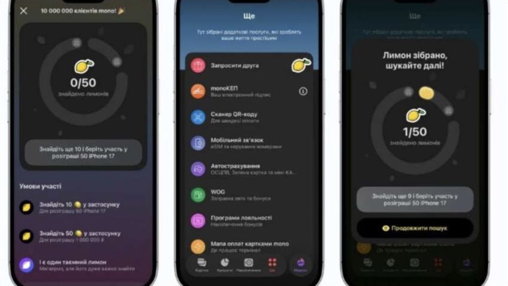

Игра в банке может стать массовой привычкой
Т‑Банк
«5 букв»
>1 млн игроков ежедневно. Короткий ежедневный ритуал внутри приложения с подарками и кэшбэком.
monobank
«Охота за лимонами»
750 тыс. на пике и 149 тыс. участников за первые шесть часов. Вирусный охват одновременно стал стресс-тестом инфраструктуры.
UOB
StarRush
350 тыс. игр, 68 тыс. наград, 69% earn-to-burn за 49 дней. Мгновенная награда хорошо запускает участие.
Raiffeisen RO
Smart Market
500 тыс. пользователей за год, 300 тыс. ваучеров и 16 тыс. начатых банковских продуктов.

